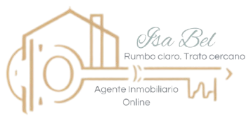
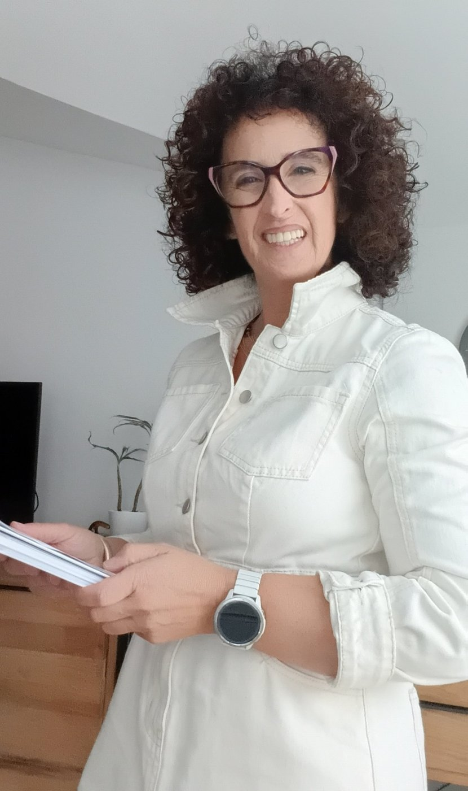

WhatsApp Business bien montado
Que tu WhatsApp trabaje como el escaparate de tu negocio, no como un chat más.
- Perfil de empresa, horario y catálogo de servicios
- Mensajes de bienvenida y de ausencia
- Respuestas rápidas y etiquetas para cada cliente

Conecto tu WhatsApp con tu agenda, tus formularios y tus listados, y pongo orden en la parte del negocio que hoy depende de tu memoria. Para inmobiliarias tradicionales y pequeñas empresas que quieren dar el paso a lo digital sin complicarse.
Sin compromiso. Hablas directamente conmigo, Isabel.

Un cliente te escribió por WhatsApp y su mensaje se quedó enterrado entre otros cien.
Tus documentos viven repartidos entre el correo, el escritorio, el Drive y el móvil.
Las citas se cierran por teléfono y se apuntan en una libreta que solo entiendes tú.
Los seguimientos a clientes y proveedores dependen de que te acuerdes a tiempo.
No es falta de ganas ni de organización. Es que estás llevando tú solo o tú sola demasiadas cosas a la vez, con herramientas que no se hablan entre ellas.
Marca las situaciones con las que te identifiques. No hay respuestas buenas ni malas: es solo una foto de cómo están las cosas hoy.
Elegimos juntos lo que de verdad te hace falta. No hace falta hacerlo todo: a veces con dos piezas bien montadas cambia el día a día.
Que tu WhatsApp trabaje como el escaparate de tu negocio, no como un chat más.
Tus clientes eligen día y hora sin llamadas de ida y vuelta, y tú no te pisas citas.
Cada consulta que te llega por la web o por un formulario queda guardada en un solo sitio.
Que sepas desde dónde te llega cada cliente: Instagram, tu tarjeta, un cartel o tu web.
Correo, documentos y pendientes, cada cosa en su sitio y con una rutina que se mantiene sola.
No te dejo un sistema que solo entiendo yo. Te acompaño hasta que lo usas con soltura.
Antes de ofrecértelo, lo he hecho para mí. Como agente inmobiliaria online trabajo en remoto y con clientes en toda España, así que necesitaba que cada mensaje acabara en una conversación, sin perder a nadie por el camino.
Lo que te propongo es lo mismo que uso cada día.
Bienvenida, mensaje de ausencia, respuestas rápidas para cada situación y etiquetas para saber en qué punto está cada contacto.
Con mi horario, mi marca y el enlace de reserva en todos mis mensajes.
Lo que me escriben desde esta web queda registrado en una base de datos, con su consentimiento de privacidad.
Instagram, tarjeta de visita, estados e historias: cada uno abre mi WhatsApp con su propio mensaje.
Conozco el día a día de una agencia desde dentro: las llamadas de interesados, las visitas que hay que cuadrar, los propietarios que quieren saber cómo va su casa y los papeles de cada operación.
Te ayudo a ordenar y conectar todo eso para que el equipo dedique su tiempo a lo que de verdad vende: atender a las personas.
Si atiendes clientes, das citas o mueves papeles, seguramente hay algo que se puede simplificar.
Gran parte del desorden no es falta de organización: es información repartida en demasiados sitios a la vez. La idea es sencilla: que cada tipo de información tenga un único lugar donde vivir.
WhatsApp y correo, solo para hablar con clientes y proveedores. No para guardar pendientes.
Una carpeta digital ordenada para facturas, contratos y certificados, con nombre y fecha.
Un único listado de tareas y seguimientos, donde cada cosa tiene siempre su estado.
Lo importante no es la herramienta, sino que cada pendiente tenga siempre uno de estos estados y que esté al día. Puede ser una hoja de cálculo, un tablero o lo que ya uses.
Siempre sabrás en qué punto estás y qué viene después.
Una videollamada para que me cuentes cómo trabajas hoy y qué te quita más tiempo.
Te digo qué haría, en qué orden y con qué herramientas, antes de empezar nada.
Lo configuro partiendo de lo que ya usas y lo compruebo todo antes de entregártelo.
Lo vemos funcionar juntos y te dejo una guía escrita con tus textos listos.
Cuando ya lo has usado unas semanas, ajustamos lo que haga falta.
No. Yo me encargo de montarlo y te lo enseño con calma, paso a paso. Lo que necesito de ti es que me cuentes cómo trabajas.
No. Empiezo por lo que ya usas y solo te propongo algo nuevo si de verdad te ahorra trabajo.
Al instalar WhatsApp Business con tu número, la propia app te ofrece pasar tus chats. Ten en cuenta que un mismo número no puede estar en las dos apps a la vez.
La app gratuita de WhatsApp Business envía la bienvenida y el mensaje de ausencia, y te deja tener respuestas preparadas a dos toques. Responder de forma automática a cada palabra necesita la versión de pago para empresas: te diré con sinceridad si a tu negocio le compensa.
Sí. Trabajo online, por videollamada, con negocios de toda España.
Depende de lo que necesites. Primero hablamos, y antes de empezar te digo qué haría y cuánto costaría, para que decidas con todo delante.